Прототип 12. Электрическое поле. Законы постоянного тока
Напряжённость и потенциал электрического поля
1.Точечный положительный заряд величиной 2 мкКл помещён между двумя протяжёнными пластинами, равномерно заряженными разноимёнными зарядами. Модуль напряжённости электрического поля, создаваемого положительно заряженной пластиной, равен 103 кВ/м, а поля, создаваемого отрицательно заряженной пластиной, в 2 раза больше. Определите модуль электрической силы, которая будет действовать на указанный точечный заряд. Ответ дайте в ньютонах
Решение

2.Какова разность потенциалов между точками поля, если при перемещении заряда 12 мкКл из одной точки в другую электростатическое поле совершает работу 0,36 мДж? (Ответ дать в вольтах.)
Решение
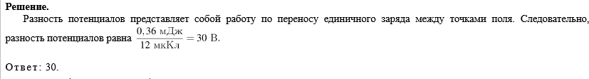
3.При перемещении точечного электрического заряда 5 мкКл в электростатическом поле из точки 1 в точку 2 действующая со стороны этого поля сила совершает работу 17 мкДж. При перемещении того же заряда из точки 1 в точку 3 в этом же электростатическом поле действующая со стороны поля сила совершает работу 7 мкДж. Чему равна разность потенциалов между точками 3 и 2 этого поля?
Решение
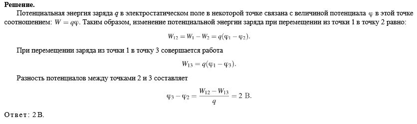
4.Во сколько раз увеличится ускорение заряженной пылинки, движущейся в однородном электрическом поле, если ее заряд увеличить в 5 раз, а напряженность поля уменьшить в 4 раза? Силу тяжести и сопротивление воздуха не учитывать
Решение
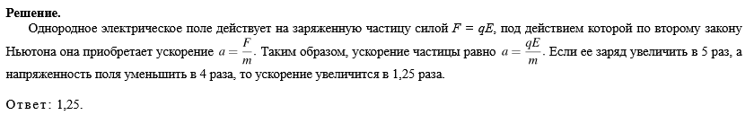
5.Точечный положительный заряд находится в точке A на плоскости XOY и имеет координаты (0; 0). Определите, какими должны быть координаты другого такого же заряда для того, чтобы в точке B, координаты которой равны (3; 4), вектор напряжённости электростатического поля, созданного этими двумя зарядами, был направлен параллельно оси OY. Ответ запишите без скобок в виде двух цифр, разделённых запятой (без пробела).
Решение
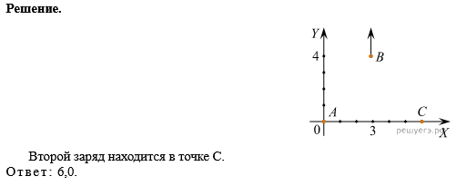
6.Пылинку, имеющую заряд 3 мкКл, перемещают в электростатическом поле из одной точки пространства в другую. Разность потенциалов между этими точками равна 3 В. Найдите модуль работы, которую совершают электростатические силы при таком перемещении данной пылинки. Ответ дайте в мкДж.
Решение
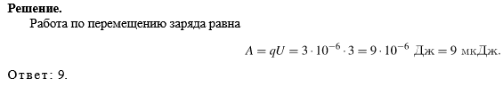
7.Модуль напряженности однородного электрического поля равен 100 В/м. Каков модуль разности потенциалов между двумя точками, расположенными на одной силовой линии поля на расстоянии 5 см? (Ответ дать в вольтах.)
Решение
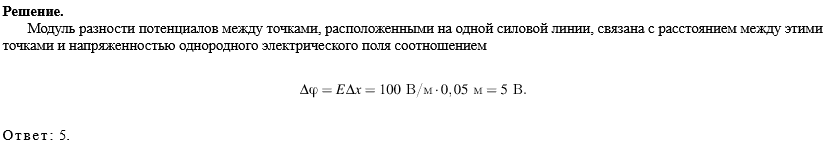
Закон Кулона, закон сохранения заряда
1.Между двумя точечными заряженными телами сила электрического взаимодействия равна 12 мН. Если заряд одного тела увеличить в 3 раза, а заряд другого тела уменьшить в 4 раза и расстояние между телами уменьшить в 2 раза, то какова будет сила взаимодействия между телами? (Ответ дайте в мН.)
Решение
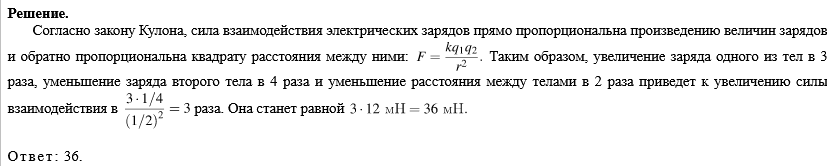
2. Между двумя точечными заряженными телами сила электрического взаимодействия равна 24 мН. Если заряд одного тела увеличить в 2 раза, а заряд другого тела уменьшить в 3 раза и расстояние между телами увеличить в 2 раза, то какова будет сила взаимодействия между телами? (Ответ дайте в мН.)
Решение
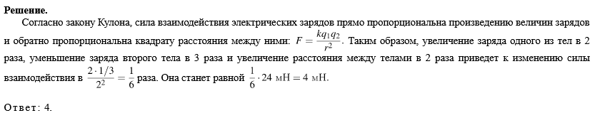
3. С какой силой взаимодействуют в вакууме два маленьких заряженных шарика, находящихся на расстоянии 4 м друг от друга? Заряд каждого шарика 8 · 10−8 Кл. Ответ выразите в микроньютонах.
Решение
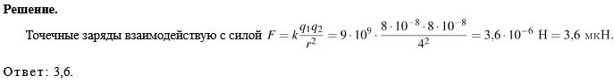
4.Два маленьких одинаковых металлических шарика, имеющие заряды 2 мкКл и 8 мкКл, взаимодействуют в вакууме с силой 0,16 Н. Какой будет сила взаимодействия между этими шариками, если их привести в соприкосновение, а потом разнести на прежнее расстояние друг от друга?
Ответ запишите в Ньютонах.
Решение
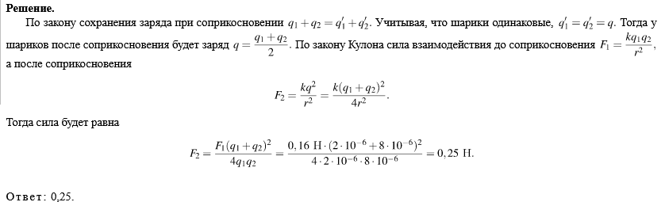
Сила тока, закон Ома
1. Сила тока в проводнике постоянна и равна 0,5 А. Какой заряд пройдёт по проводнику за 20 минут? (Ответ дайте в кулонах.)
Решение
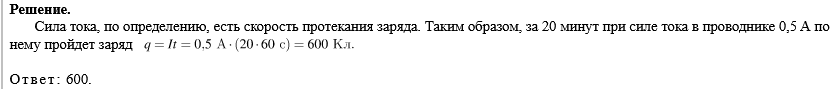
2. Сила тока в проводнике постоянна и равна 0,5 А. За сколько секунд заряд 60 Кл пройдёт по проводнику?
Решение
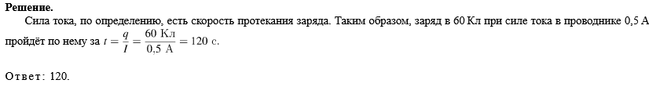
3.Через проводник постоянного сечения течёт постоянный ток силой 1 нА. Сколько электронов в среднем проходит через поперечное сечение этого проводника за 0,72 мкс?
Решение
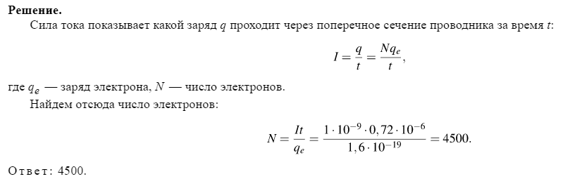
4.Идеальный амперметр и три резистора сопротивлением R=2 Ом, 2R и 3R включены последовательно в электрическую цепь, содержащую источник с ЭДС, равной 5 В, и внутренним сопротивлением r=8 Ом. Каковы показания амперметра? (Ответ дайте в амперах.)
Решение
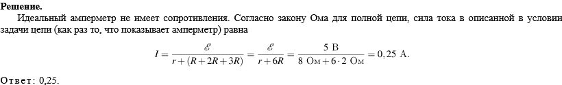
Электрические схемы
1.Участок цепи состоит из двух одинаковых параллельно соединенных резисторов R1 и R2, каждый с сопротивлением 2 Ом, и резистора R3 с сопротивлением 3 Ом. Чему равно общее сопротивление участка цепи? (Ответ дайте в кулонах.)
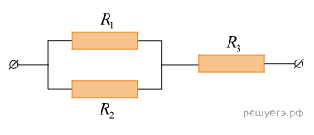
Решение
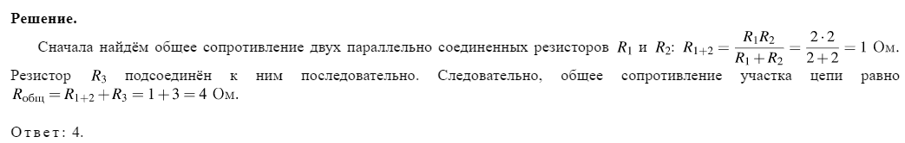
2.
На рисунке показан участок цепи постоянного тока. Каково сопротивление этого участка, если r = 1 Ом? 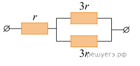
Решение
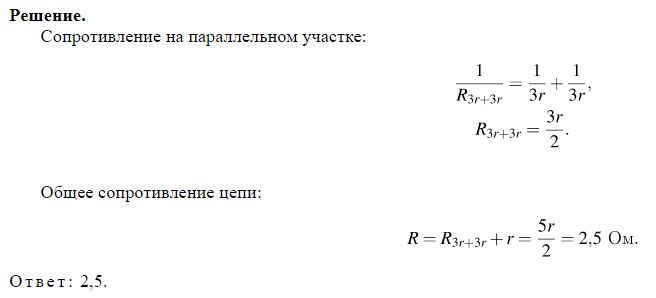
3. На участке цепи, изображенном на рисунке, сопротивление каждого из резисторов равно R=1 Ом. Чему равно полное сопротивление участка при замкнутом ключе К?
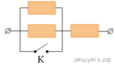
Решение
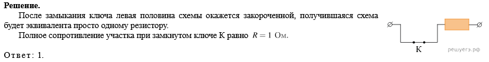
4.На участке цепи, изображённом на рисунке, сопротивление каждого из резисторов равно 21 Ом. Чему равно полное сопротивление участка?
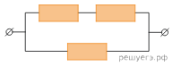
Решение
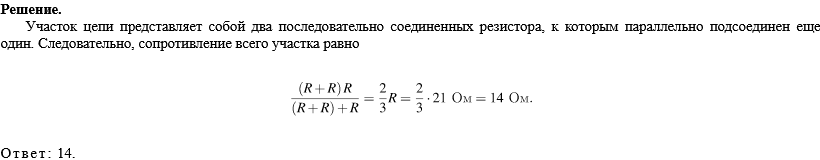
5.При подключении куска проволоки к полюсам батареи через неё течёт ток силой 0,5 А. Этот кусок проволоки сложили пополам, место сгиба разрезали. Затем разрезали каждый получившийся короткий провод на две равные части, зачистили концы и присоединили все эти части к полюсам батареи параллельно. Найдите силу тока, которая будет течь через батарею в этом случае. Внутреннее сопротивление батареи очень мало.
Решение
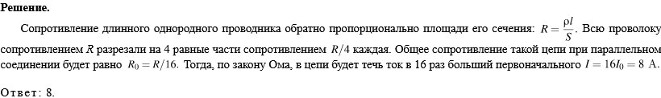
Прототип 15.Электродинамика
Анализ физических процессов. Электричество
1.Исследовалась зависимость напряжения на обкладках конденсатора от заряда этого конденсатора. Результаты измерений представлены в таблице.
Погрешности измерений величин q и U равнялась соответственно 0,005 мКл и 0,01 В.
Выберите все утверждения, соответствующие результатам этих измерений.
1) Электроёмкость конденсатора примерно равна 5 мФ.
2) Напряжение на конденсаторе возрастает с увеличением заряда.
3) Для заряда 0,02 мКл напряжение на конденсаторе составит 0,12 В.
4) Для заряда 0,06 мКл напряжение на конденсаторе составит 0,5 В.
5) Напряжение на конденсаторе не зависит от заряда.
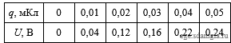
Решение
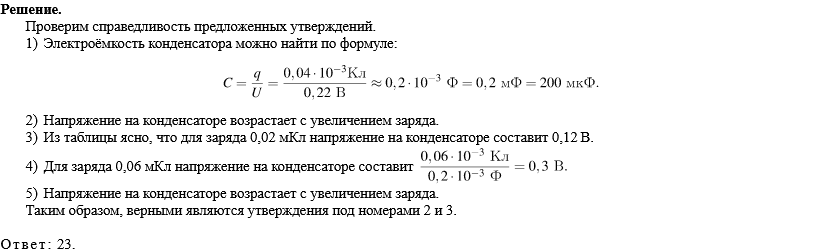
2.На графике представлены результаты измерения напряжения на реостате U при различных значениях сопротивления реостата R. Погрешность измерения напряжения ΔU = ±0,2 В, сопротивления ΔR = ±0,5 Ом.
Выберите все утверждения, соответствующие результатам этих измерений.
1) С уменьшением сопротивления напряжение увеличивается.
2) При сопротивлении 2 Ом сила тока примерно равна 2 А.
3) При сопротивлении 1 Ом сила тока в цепи примерно равна 3 А.
4) При сопротивлении 10 Ом сила тока примерно равна 0,3 А.
5) Напряжение зависит от сопротивления.
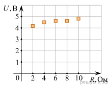
Решение
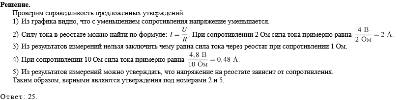
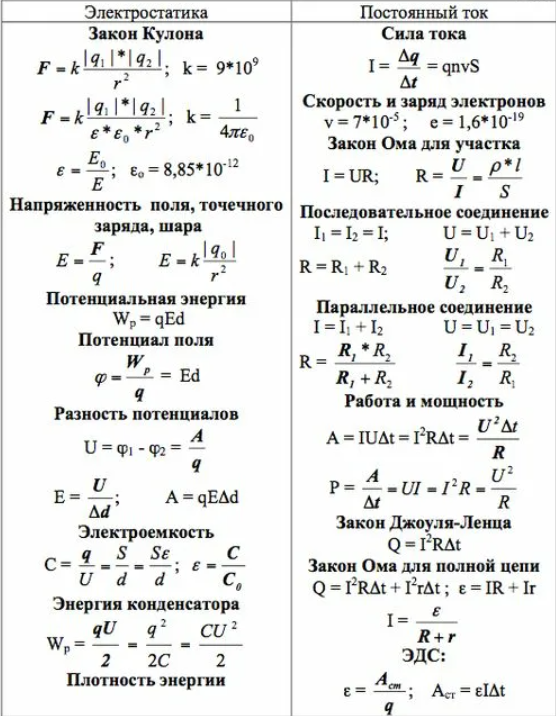